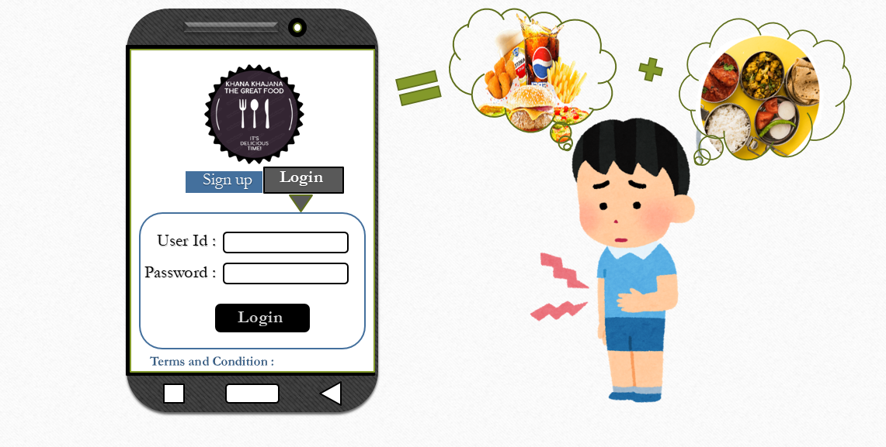
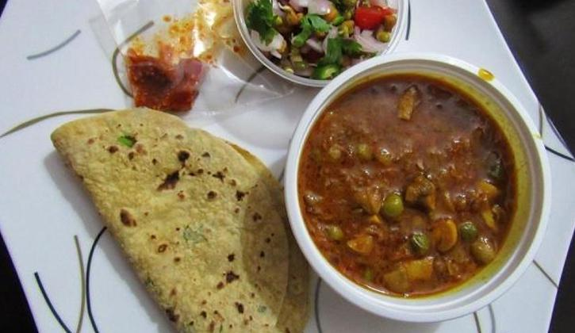

"Welcome to our Khana Khajana The Great Food."
.......The purpose of this project is to develop a computerized and mobilized food ordering system that can be used to revolutionize the traditional ordering system that currently implemented in majority of the food and beverage industry. The traditional system that using by most of the food and beverage industry is the traditional manual ordering system which means all works and procedures is recorded through manpower manual work and it consist of a huge amount of paper work that is not effective and efficiency. This cause the business to encounter trouble which regarding human error due to the huge amount of manpower manual work that operating in each business routine. Thus, this computerized and mobilized food ordering system is designed to assist the business routine in term of having better management as well as easier to handle daily business operation.
{kind=link}
.png)
......The name of our application is Khana Khajana The Great Food. Khana Khajana The Great Food basically provides a platform for the users to order home-made & Restaurant food online and receive it on their doorstep. With the increasing modernization in our country more and more people have to move/are moving to new places for work for either short or long span. In such cases the need of home – made or Restaurant food for such transients/residents who cannot prepare food by themselves becomes essential.

{kind=link}
...... Khana Khajana The Great Food also serves this need by providing you with food from the nearest home-made and Restaurant food supplier. And along with that the customer can even create and update their Tiffin service schedule as perrequirement. This application is very useful because if you are busy with any work like you are student, engineer, judge, accountant, government officer, etc.

{kind=link}
...... and then you do not have time to cook food then you can use this application for getting fresh & healthy home-made food otherwise you can also order for getting restaurant food as per your requirement this all process is online means you are anywhere you can get your food using this application. There is pre- booking table for restaurant service is also available so you can also book your table.